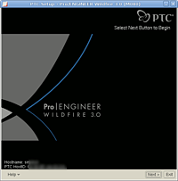
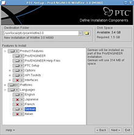
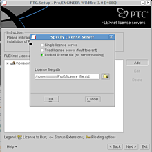
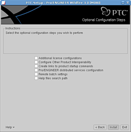
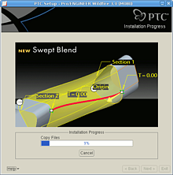
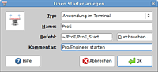

ProEngineer
Archivierte Anleitung
Dieser Artikel wurde archiviert, da er - oder Teile daraus - nur noch unter einer älteren Ubuntu-Version nutzbar ist. Diese Anleitung wird vom Wiki-Team weder auf Richtigkeit überprüft noch anderweitig gepflegt. Zusätzlich wurde der Artikel für weitere Änderungen gesperrt.
Zum Verständnis dieses Artikels sind folgende Seiten hilfreich:
 Hier wird beschrieben, wie Pro/Engineer (ProE) von der Firma Parametric Technology Corporation (PTC) auf Ubuntu installiert und gestartet werden kann. ProEngineer ist ein professionelles 3D-CAD-Programm zur Modellierung und Zeichnung von Bauteilen und Maschinen. In der Industrie bewährt es sich schon seit Jahren. Man kann dieses Closed-Source-Programm käuflich erwerben. Systemvoraussetzungen findet man auf der Website des Herstellers
Hier wird beschrieben, wie Pro/Engineer (ProE) von der Firma Parametric Technology Corporation (PTC) auf Ubuntu installiert und gestartet werden kann. ProEngineer ist ein professionelles 3D-CAD-Programm zur Modellierung und Zeichnung von Bauteilen und Maschinen. In der Industrie bewährt es sich schon seit Jahren. Man kann dieses Closed-Source-Programm käuflich erwerben. Systemvoraussetzungen findet man auf der Website des Herstellers  .
.
Eine 30-Tage Demoversion kann zum herunterladen beantragt  werden. Leider momentan (Dezember 2007) nur für Windows.
werden. Leider momentan (Dezember 2007) nur für Windows.
Hinweis:
Dieser Artikel bezieht sich auf die Version Wildfire 3. Alle anderen Wildfire-Versionen sollten ähnlich installierbar sein.

Abhängigkeiten¶
Ubuntu 8.04¶
Vor der Installation sollte man sichergehen, alle notwendigen Pakete installiert[1] zu haben:
csh
libmotif3
libstdc++5
build-essential
libgtk1.2
nfs-common
 mit apturl
mit apturl
Paketliste zum Kopieren:
sudo apt-get install csh libmotif3 libstdc++5 build-essential libgtk1.2 nfs-common
sudo aptitude install csh libmotif3 libstdc++5 build-essential libgtk1.2 nfs-common
Ab Ubuntu 9.10¶
Ab Ubuntu 9.10 sind nicht mehr alle benötigten Pakete in den Ubuntuquellen vorhanden. Die folgenden können nachwievor über die Paketquellen installiert[1] werden:
csh
libmotif3
build-essential
nfs-common
mit apturl
Paketliste zum Kopieren:
sudo apt-get install csh libmotif3 build-essential nfs-common
sudo aptitude install csh libmotif3 build-essential nfs-common
Die Pakete libstdc++5 und libgtk1.2 kann man noch über Debianquellen erhalten.
Hinweis!
Zusätzliche Fremdquellen können das System gefährden.
Hier findet man die Pakete, bitte in dieser Reihenfolge herunterladen und installieren:
http://packages.debian.org/stable/base/libstdc++5 http://packages.debian.org/lenny/libglib1.2ldbl http://packages.debian.org/de/lenny/libgtk1.2-common http://packages.debian.org/de/lenny/libgtk1.2
Installation¶
Nachdem man alle benötigten Pakete installiert hat, ruft man von den Produkt-CDs über das Terminal[2] den grafischen Installer auf:
sudo /media/cdrom/./setup #oder das jeweilige Laufwerk
Hinweis:
Während der Installation von ProEngineer sollten 3-D Desktop-Effekte deaktiviert sein. Auch während des Betriebs von ProEngineer können Probleme bei der Darstellung unter Verwendung eines 3D-Desktop-Managers auftreten.
Man kann wie gewohnt dem grafischen Installer folgen. Diese Anleitungen bezieht sich auf die Einstellungen, wie sie auf den Screenshots zu finden sind.
| Folgende Bildergalerie veranschaulicht den Vorgang: | |||
|  |  |  |  |
| Komponten Auswählen | In diesem Fall wird eine Lizenzdatei benutzt | Keine Sonderwünsche | Kopiervorgang abwarten |
Starten¶
Die installierten Dateien liegen unter /usr/local/ptc/proeWildfire3.0. Man kann ProEngineer mit folgendem Befehl starten.
/usr/local/ptc/proeWildfire3.0/bin/proe1
Wie gewohnt wird man nach geraumer Zeit vom ProEngineer Startbild begrüßt. Läuft alles glatt, kann man mit dem Arbeiten beginnen.
ProE auf Deutsch¶
Es ist auch möglich, ProEngineer komplett auf Deutsch umzustellen. Dazu muss man einmalig ein locale für de_DE@euro erstellen:
sudo locale-gen de_DE@euro
Anschließen kann man die Umgebungsvariabel PRO_LANG dazu nutzen, ProEngineer auf Deutsch um zu stellen. Folgender Befehl startet ProEngineer auf Deutsch:
export PRO_LANG=de_DE@euro && /usr/local/ptc/proeWildfire3.0/bin/./proe1
Dieser Befehl muss in einem Terminal ausgeführt werden. Vereinfachen kann man sich diesen Befehl, wenn man ein kleines Startskript anlegt:
1 2 3 4 5 6 7 8 9 | #!/bin/bash # Für diese Shell wird die Sprache ausschließlich für ProEngineer geändert. export PRO_LANG=de_DE@euro # Hier wird das Arbeitsverzeichnis festgelegt, in dem ProEngineer starten soll # Dieses Verzeichnis muss natürlich bereits existieren cd "$HOME" # ProEngineer starten /usr/local/ptc/proeWildfire3.0/bin/./proe1 |
 Nun kann man sich einen Starter zu diesem Skript an beliebiger Stelle ablegen. Wer will, kann sich ein Icon setzen: . Hier ist die SVG-Quelldatei: Icon und einen Menüeintrag erstellen[6]
Eventuell müssen unter dem Menü "Tools -> Option" folgende Parameter (einmalig) eingestellt werden
| Parameter | Wert |
dialog_translation | yes |
menu_translation | yes |
msg_translation | yes |
help_translation | yes |
button_name_in_help | no |
Jede Änderung muss mit einem Klick auf "Hinzuf/Ändern" bestätigt werden, zum Schluss muss auf "Übernehmen" geklickt werden. Anschließend muss man die Datei als config.pro in /usr/local/ptc/proeWildfire3.0/text/ gespeichert werden. Somit ist dann sichergestellt, dass beim nächsten Start die korrekten Einstellungen auch wiedergefunden werden.
dir_purge¶
In Windows gibt es ein hilfreiches Skript mit dem man Pro/E-Verzeichnisse bereinigen kann, "dir_purge". Das Skript durchsucht die Verzeichnisse, löscht ältere Versionsstände und behält die jeweils aktuellste Version der Konstruktionsdaten.
In Linux kann man "dir_purge" folgendermaßen erstellen, indem man ein Skript mit folgendem Inhalt anlegt:
1 2 3 4 5 6 7 8 9 10 11 12 13 14 15 16 17 18 | #!/bin/sh # purge recursively selected dir for ProE file. # don't split NAUTILUS_SCRIPT_SELECTED_FILE_PATHS on spaces. IFS=" " for ARG in $NAUTILUS_SCRIPT_SELECTED_FILE_PATHS do if [ -d "$ARG" ] then for DIR in `find "$ARG" -type d` do cd $DIR purge done fi done |
Das original Pro/E Purge Skript liegt unter /usr/local/ptc/proeWildfire3.0/i486_linux/obj/purge.
Dann verlinken nach /bin
ln -s /usr/local/ptc/proeWildfire3.0/bin/purge /bin
Nun das selbst erstellte Skript zu den Nautilus-Skripten kopieren:
# cp dir_purge ~/.gnome2/nautilus-scripts
Jetzt kann man in Nautilus per gedrückter rechter Maustaste  -> Skripte das Skript dir_purge ausführen.
-> Skripte das Skript dir_purge ausführen.
- Erstellt mit Inyoka
-
 2004 – 2017 ubuntuusers.de • Einige Rechte vorbehalten
2004 – 2017 ubuntuusers.de • Einige Rechte vorbehalten
Lizenz • Kontakt • Datenschutz • Impressum • Serverstatus -
Serverhousing gespendet von